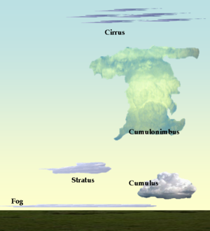
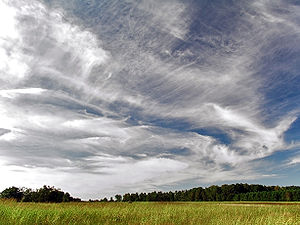
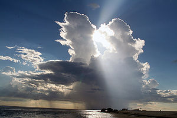
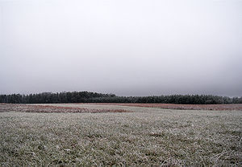
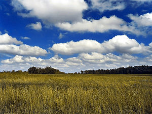

Partly Cloudy is a demonstration of the appMobiUI mobile app layout framework. It is designed to allow for rapid mobile application layout.
Continue


Partly Cloudy is a demonstration of the appMobiUI mobile app layout framework. It is designed to allow for rapid mobile application layout.
Continue
Clouds are formed when water evaporates into vapor from oceans, lakes, and ponds or by evapotranspiration over Earth's land surface and rises up into colder areas of the atmosphere due to convective, orographic, or frontal lifting. The water vapor attaches itself to condensation nuclei which could be anything from dust to microscopic particles of salt and debris. Once the vapor has been cooled to saturation, the cloud becomes visible. All weather producing clouds form in the troposphere, the lowest major layer of the atmosphere. However very small amounts of water vapor can be found higher up in the stratosphere and mesosphere and may condense into very thin clouds if the air temperatures are sufficiently cold.
Tropospheric clouds can be divided into three main categories based upon the Latin root words which refer to the process of formation and physical structure of the clouds. The first of the three is Cirrus, which has only one genus and therefore shares the same name. It is in the high altitude range and occurs mostly in the form of filaments. The other two are Stratus that are mostly sheet-like in structure, and Cumulus that appear heaped, rolled, and/or rippled. Stratus and Cumulus occur in the high, middle, and low levels of the troposphere, so each of these categories have several cloud genera.
A total of ten cloud genera are derived by cross-classification of the stratus and cumulus categories into high (prefix cirro-), middle (prefix alto)-, low, and low to middle with some vertical development for a subtotal of eight main types. To these are added cirrus which is always high, and cumulonimbus which has its own augmented height range characteristics as a cloud of considerable vertical development. Although most cumulus shows only limited vertical development, the species cumulus congestus can be classified as having considerable vertical extent. Congestus tops are usually higher than nimbostratus, but not as high as cumulonimbus.[2] Prefixes for cloud genera belonging to height ranges other than high and middle are either absent or refer to characteristics other than the height range.
The essentials of the modern nomenclature system for tropospheric clouds were proposed by Luke Howard, a British manufacturing chemist and an amateur meteorologist with broad interests in science, in an 1802 presentation to the Askesian Society. Since 1890, clouds are classified and illustrated in cloud atlases.
Clouds that form above the troposphere are not given Latin names. Stratospheric clouds are classified alpha-numerically according to their chemical makeup. Mesospheric clouds are classified alpha-numerically according to physical structure.
Information on this page is from http://en.wikipedia.org/wiki/List_of_cloud_types
This is some text to make it scroll
This is some text to make it scroll
This is some text to make it scroll
This is some text to make it scroll
This is some text to make it scroll
Password:
State:
This is some text to make it scroll
This is some text to make it scroll

Test LoginCirrus clouds generally refer to atmospheric clouds that are characterized by thin, wisplike strands, often bunched into tufts, leading to their common (non-standard) name of mare's tail.[2] The word cirrus is Latin for curl, and cirrus clouds commonly resemble curly hair.[3][4] They range in color from white to a faint gray.[5] When these clouds are so extensive that they are virtually indistinguishable from one another, they form a sheet of cirrus called cirrostratus. Convection at high altitudes can produce another form of cirrus called cirrocumulus, a pattern of small cloud tufts which include droplets of supercooled water. Jet stream-powered cirrus clouds can grow so large that they stretch across continents, and yet they are still only a few kilometers deep.[6] In addition, they can form from the outflow of tropical cyclones or the anvils of cumulonimbus clouds. The term cirrus is also used for certain interstellar clouds composed of sub-micrometer sized dust grains.
For more information check out http://en.wikipedia.org/wiki/Cirrus_cloud

Cumulonimbus is a low to middle level cloud with considerable vertical development (family D2) that is tall, dense, and involved in thunderstorms and other inclement weather. Cumulonimbus originates from Latin: Cumulus "accumulated" and nimbus "rain". It is a result of atmospheric instability. These clouds can form alone, in clusters, or along a cold front in a squall line. They create lightning through the heart of the cloud. Cumulonimbus clouds form from cumulus clouds (namely from cumulus congestus) and can further develop into a supercell, a severe thunderstorm with special features.
For more information check out http://en.wikipedia.org/wiki/Cumulonimbus

A Stratus cloud is a cloud belonging to a class characterized by horizontal layering with a uniform base, as opposed to convective clouds that are as tall or taller than wide (these are termed cumulus clouds). More specifically, the term stratus is used to describe flat, hazy, featureless clouds of low altitude varying in color from dark gray to nearly white. Stratus clouds may produce a light drizzle or snow. A "cloudy day" usually features a sky filled with stratus clouds obscuring the disk of the sun. These clouds are essentially above-ground fog formed either through the lifting of morning fog or when cold air moves at low altitudes over a region.
For more information check out http://en.wikipedia.org/wiki/Stratus_cloud

Cumulus clouds are a type of cloud with noticeable vertical development and clearly defined edges. Cumulus means "heap" or "pile" in Latin. They are often described as "puffy" or "cotton-like" in appearance. Cumulus clouds may appear alone, in lines, or in clusters. Cumulus clouds are often precursors of other types of clouds, such as cumulonimbus, when influenced by weather factors such as instability, moisture, and temperature gradient. Cumulus clouds are part of the larger category of cumuliform clouds, which include cumulus, cumulus congestus, and cumulonimbus clouds, among others.[1] The most intense cumulus and cumulonimbus clouds may be associated with severe weather phenomena such as hail, waterspouts and tornadoes.
For more information check out http://en.wikipedia.org/wiki/Cumulus
Fog is a collection of water droplets or ice crystals suspended in the air at or near the Earth's surface. While fog is a type of a cloud, the term "fog" is typically distinguished from the more generic term "cloud" in that fog is low-lying, and the moisture in the fog is often generated locally (such as from a nearby body of water, like a lake or the ocean, or from nearby moist ground or marshes).
Fog is distinguished from mist only by its density, as expressed in the resulting decrease in visibility: Fog reduces visibility to less than 1 km (5/8 statute mile), whereas mist reduces visibility to no less than 1 km (5/8 statute mile).[3] For aviation purposes in the UK, a visibility of less than 2 km but greater than 999 m is considered to be mist if the relative humidity is 95% or greater - below 95% haze is reported.[citation needed]
For more information check out http://en.wikipedia.org/wiki/Fog
[ Place Holder For Search Page]
All information and images were sourced from Wikipedia.org